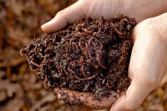
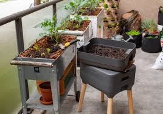

¿Qué es la Lombricomposta?
Es un proceso de transformación de los residuos orgánicos (como restos de frutas y verduras) en un abono de altísima calidad llamado humus de lombriz. Este proceso es llevado a cabo por lombrices rojas californianas, unas ingenieras naturales increíbles.

